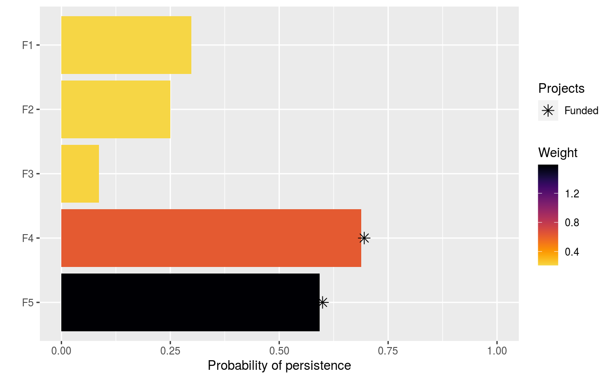

Set the objective of a project prioritization problem to
maximize the total number of features that are expected to persist, whilst
ensuring that the cost of the solution is within a pre-specified budget
(Joseph, Maloney & Possingham 2009). This objective is conceptually similar
to maximizing species richness in a study area. Furthermore, weights can
also be used to specify the relative importance of conserving specific
features (see add_feature_weights).
add_max_richness_objective(x, budget)
Arguments
| x |
|
|---|---|
| budget |
|
Value
ProjectProblem-class object with the objective
added to it.
Details
A problem objective is used to specify the overall goal of the project prioritization problem. Here, the maximum richness objective seeks to find the set of actions that maximizes the total number of features (e.g. populations, species, ecosystems) that is expected to persist within a pre-specified budget. Let \(I\) represent the set of conservation actions (indexed by \(i\)). Let \(C_i\) denote the cost for funding action \(i\), and let \(m\) denote the maximum expenditure (i.e. the budget). Also, let \(F\) represent each feature (indexed by \(f\)), \(W_f\) represent the weight for each feature \(f\) (defaults to one for each feature unless specified otherwise), and \(E_f\) denote the probability that each feature will go extinct given the funded conservation projects.
To guide the prioritization, the conservation actions are organized into
conservation projects. Let \(J\) denote the set of conservation projects
(indexed by \(j\)), and let \(A_{ij}\) denote which actions
\(i \in I\) comprise each conservation project
\(j \in J\) using zeros and ones. Next, let \(P_j\) represent
the probability of project \(j\) being successful if it is funded. Also,
let \(B_{fj}\) denote the probability that each feature
\(f \in F\) associated with the project \(j \in J\)
will persist if all of the actions that comprise project \(j\) are funded
and that project is allocated to feature \(f\). For convenience,
let \(Q_{fj}\) denote the actual probability that each
\(f \in F\) associated with the project \(j \in J\)
is expected to persist if the project is funded. If the argument
to adjust_for_baseline in the problem function was set to
TRUE, and this is the default behavior, then
\(Q_{fj} = (P_{j} \times B_{fj}) + \bigg(\big(1 - (P_{j} B_{fj})\big)
\times (P_{n} \times B_{fn})\bigg)\), where n corresponds to the
baseline "do nothing" project. This means that the probability
of a feature persisting if a project is allocated to a feature
depends on (i) the probability of the project succeeding, (ii) the
probability of the feature persisting if the project does not fail,
and (iii) the probability of the feature persisting even if the project
fails. Otherwise, if the argument is set to FALSE, then
\(Q_{fj} = P_{j} \times B_{fj}\).
The binary control variables \(X_i\) in this problem indicate whether each project \(i \in I\) is funded or not. The decision variables in this problem are the \(Y_{j}\), \(Z_{fj}\), and \(E_f\) variables. Specifically, the binary \(Y_{j}\) variables indicate if project \(j\) is funded or not based on which actions are funded; the binary \(Z_{fj}\) variables indicate if project \(j\) is used to manage feature \(f\) or not; and the semi-continuous \(E_f\) variables denote the probability that feature \(f\) will go extinct.
Now that we have defined all the data and variables, we can formulate the problem. For convenience, let the symbol used to denote each set also represent its cardinality (e.g. if there are ten features, let \(F\) represent the set of ten features and also the number ten).
$$ \mathrm{Maximize} \space \sum_{f = 0}^{F} (1 - E_f) W_f \space \mathrm{(eqn \space 1a)} \\ \mathrm{Subject \space to} \sum_{i = 0}^{I} C_i \leq m \space \mathrm{(eqn \space 1b)} \\ E_f = 1 - \sum_{j = 0}^{J} Z_{fj} Q_{fj} \space \forall \space f \in F \space \mathrm{(eqn \space 1c)} \\ Z_{fj} \leq Y_{j} \space \forall \space j \in J \space \mathrm{(eqn \space 1d)} \\ \sum_{j = 0}^{J} Z_{fj} \times \mathrm{ceil}(Q_{fj}) = 1 \space \forall \space f \in F \space \mathrm{(eqn \space 1e)} \\ A_{ij} Y_{j} \leq X_{i} \space \forall \space i \in I, j \in J \space \mathrm{(eqn \space 1f)} \\ E_{f} \geq 0, E_{f} \leq 1 \space \forall \space b \in B \space \mathrm{(eqn \space 1g)} \\ X_{i}, Y_{j}, Z_{fj} \in [0, 1] \space \forall \space i \in I, j \in J, f \in F \space \mathrm{(eqn \space 1h)} $$
The objective (eqn 1a) is to maximize the weighted persistence of all the species. Constraint (eqn 1b) limits the maximum expenditure (i.e. ensures that the cost of the funded actions do not exceed the budget). Constraints (eqn 1c) calculate the probability that each feature will go extinct according to their allocated project. Constraints (eqn 1d) ensure that feature can only be allocated to projects that have all of their actions funded. Constraints (eqn 1e) state that each feature can only be allocated to a single project. Constraints (eqn 1f) ensure that a project cannot be funded unless all of its actions are funded. Constraints (eqns 1g) ensure that the probability variables (\(E_f\)) are bounded between zero and one. Constraints (eqns 1h) ensure that the action funding (\(X_i\)), project funding (\(Y_j\)), and project allocation (\(Z_{fj}\)) variables are binary.
References
Joseph LN, Maloney RF & Possingham HP (2009) Optimal allocation of resources among threatened species: A project prioritization protocol. Conservation Biology, 23, 328--338.
See also
Examples
# load data data(sim_projects, sim_features, sim_actions) # build problem with maximum richness objective and $300 budget p1 <- problem(sim_projects, sim_actions, sim_features, "name", "success", "name", "cost", "name") %>% add_max_richness_objective(budget = 200) %>% add_binary_decisions() # \donttest{ # solve problem s1 <- solve(p1)#> Gurobi Optimizer version 9.0.1 build v9.0.1rc0 (linux64) #> Optimize a model with 47 rows, 47 columns and 102 nonzeros #> Model fingerprint: 0x35c8d3f0 #> Variable types: 0 continuous, 42 integer (42 binary) #> Semi-Variable types: 5 continuous, 0 integer #> Coefficient statistics: #> Matrix range [9e-02, 1e+02] #> Objective range [1e+00, 1e+00] #> Bounds range [1e+00, 1e+00] #> RHS range [1e+00, 2e+02] #> Found heuristic solution: objective 1.4456093 #> Presolve removed 16 rows and 12 columns #> Presolve time: 0.00s #> Presolved: 31 rows, 35 columns, 65 nonzeros #> Variable types: 0 continuous, 35 integer (35 binary) #> Presolved: 31 rows, 35 columns, 65 nonzeros #> #> #> Root relaxation: objective 2.190381e+00, 11 iterations, 0.00 seconds #> #> Nodes | Current Node | Objective Bounds | Work #> Expl Unexpl | Obj Depth IntInf | Incumbent BestBd Gap | It/Node Time #> #> * 0 0 0 2.1903807 2.19038 0.00% - 0s #> #> Explored 0 nodes (11 simplex iterations) in 0.00 seconds #> Thread count was 1 (of 4 available processors) #> #> Solution count 1: 2.19038 #> #> Optimal solution found (tolerance 0.00e+00) #> Best objective 2.190380737245e+00, best bound 2.190380737245e+00, gap 0.0000%#> # A tibble: 1 x 21 #> solution status obj cost F1_action F2_action F3_action F4_action F5_action #> <int> <chr> <dbl> <dbl> <dbl> <dbl> <dbl> <dbl> <dbl> #> 1 1 OPTIM~ 2.19 195. 1 1 0 0 0 #> # ... with 12 more variables: baseline_action <dbl>, F1_project <dbl>, #> # F2_project <dbl>, F3_project <dbl>, F4_project <dbl>, F5_project <dbl>, #> # baseline_project <dbl>, F1 <dbl>, F2 <dbl>, F3 <dbl>, F4 <dbl>, F5 <dbl># } # build another problem that includes feature weights p2 <- p1 %>% add_feature_weights("weight") # \donttest{ # solve problem with feature weights s2 <- solve(p2)#> Gurobi Optimizer version 9.0.1 build v9.0.1rc0 (linux64) #> Optimize a model with 47 rows, 47 columns and 102 nonzeros #> Model fingerprint: 0xecf9d5ff #> Variable types: 0 continuous, 42 integer (42 binary) #> Semi-Variable types: 5 continuous, 0 integer #> Coefficient statistics: #> Matrix range [9e-02, 1e+02] #> Objective range [2e-01, 2e+00] #> Bounds range [1e+00, 1e+00] #> RHS range [1e+00, 2e+02] #> Found heuristic solution: objective 0.6654645 #> Presolve removed 16 rows and 12 columns #> Presolve time: 0.00s #> Presolved: 31 rows, 35 columns, 65 nonzeros #> Variable types: 0 continuous, 35 integer (35 binary) #> Presolved: 31 rows, 35 columns, 65 nonzeros #> #> #> Root relaxation: objective 1.511230e+00, 11 iterations, 0.00 seconds #> #> Nodes | Current Node | Objective Bounds | Work #> Expl Unexpl | Obj Depth IntInf | Incumbent BestBd Gap | It/Node Time #> #> * 0 0 0 1.5112297 1.51123 0.00% - 0s #> #> Explored 0 nodes (11 simplex iterations) in 0.00 seconds #> Thread count was 1 (of 4 available processors) #> #> Solution count 1: 1.51123 #> #> Optimal solution found (tolerance 0.00e+00) #> Best objective 1.511229665304e+00, best bound 1.511229665304e+00, gap 0.0000%#> # A tibble: 1 x 21 #> solution status obj cost F1_action F2_action F3_action F4_action F5_action #> <int> <chr> <dbl> <dbl> <dbl> <dbl> <dbl> <dbl> <dbl> #> 1 1 OPTIM~ 1.51 199. 0 0 0 1 1 #> # ... with 12 more variables: baseline_action <dbl>, F1_project <dbl>, #> # F2_project <dbl>, F3_project <dbl>, F4_project <dbl>, F5_project <dbl>, #> # baseline_project <dbl>, F1 <dbl>, F2 <dbl>, F3 <dbl>, F4 <dbl>, F5 <dbl># }